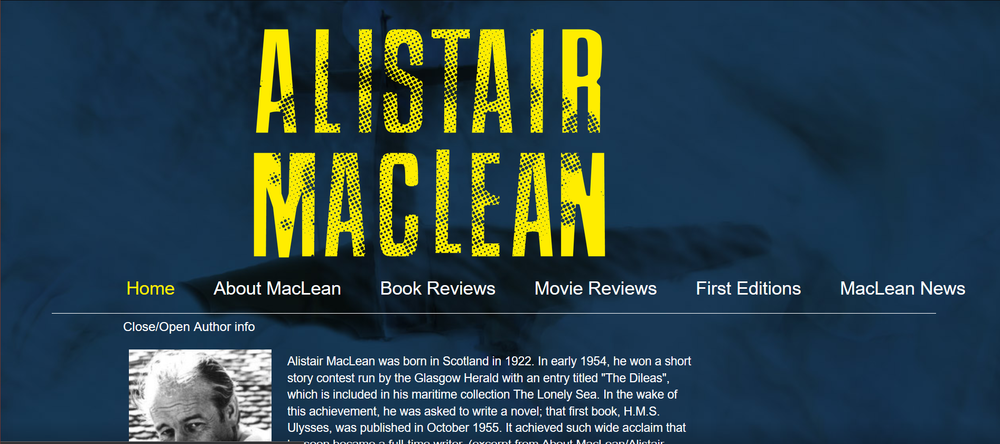

● Besøk siden
Kildekode
Prosjekt på videregående, 2015
Prosjekt på videregående, 2015
Verktøy:
- HTML
- CSS
I 2015, andre eller tredjeåret på videregående, fikk vi et valgfritt prosjekt. Jeg hadde allerede vært skuffet over hvordan nettsiden til en av mine favorittforfattere så ut, og jeg bestemte meg da for at prosjektet mitt skulle være å redesigne den. For meg var det viktig at nettsiden skulle utstråle spenning og i tillegg være pen å se på.
Jeg bygget nettsiden i HTML og CSS og bittelitt JavaScript. Logoen lagde jeg i Illustrator og header-bildet lagde jeg ved photoshoppe et bilde av eget modellfly oppnå noen T-skjorter.